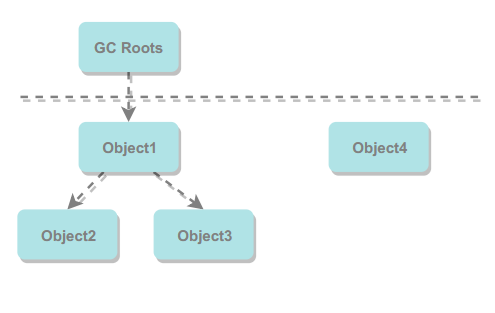
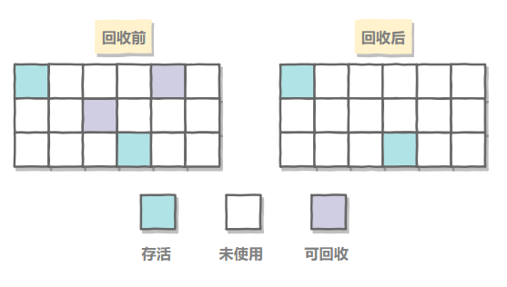
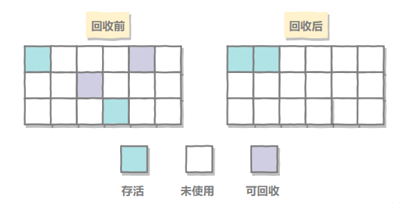
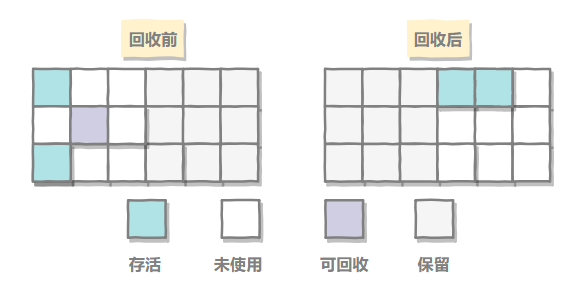
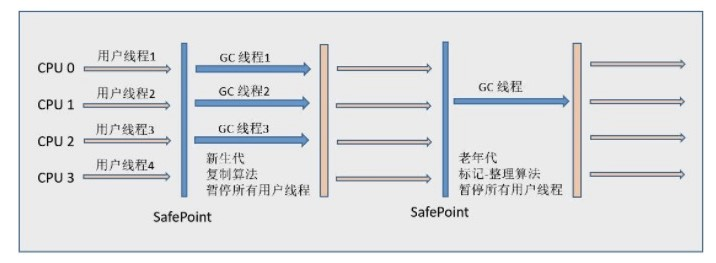

垃圾回收主要是针对堆和方法区进行的。因为栈区域中的程序计数器、虚拟机栈和本地方法栈这三个区域属于线程私有的，只存在于线程的生命周期内，线程结束后就会消失，因此不需要对这三个区域进行垃圾回收。
具体而言，栈中的栈帧随着方法的进入和退出而有条不紊的执行着入栈和出栈操作，每一个栈帧中分配多少内存基本上是在类结构确定下来的时候就已知的（尽管在运行期会由JIT编译器进行一些优化，但是大体上可以认为是编译器可知的）。因此这些区域的内存分配和回收都具有确定性。而Java堆和方法区则不一样，一个接口中的多个实现类需要的内存可能不一样，一个方法中的多个分支需要的内存也可能不一样，我们只有在程序运行期间才能知道会创建哪些对象，这部分的内存分配和回收都是动态的，因此GC主要关注于堆和方法区。
一、判断一个对象是否可以回收
1.引用计数法
为对象添加一个引用计数器，当对象增加一个引用时计数器加1，引用失效时计数器减1。引用计数为0时的对象可以被回收。
- 优点：实现简单，判定效率很高
- 缺点：无法解决对象间循环依赖问题。当两个对象出现循环依赖的情况下，此时引用计数器永远不为0，导致无法对它们进行回收。正是因为循环依赖问题的出现，因此Java虚拟机不使用引用计数法。
1 | public class Test { |
2.可达性分析法
以GC Roots为起始点进行搜索，可达的对象都是存活的，不可达的对象可被回收。

在Java语言中，可作为GC Roots的对象包括以下几种：
- 虚拟机栈（栈帧中的本地变量表）中引用的对象
- 方法区中类静态属性引用的对象
- 方法区中的常量引用的对象
- 本地方法栈中JNI（即一般说的Native方法）引用的对象
3.方法区的回收
因为方法区主要存放永久代对象，而永久代对象的回收率比新生代低很多，所以在方法区上进行回收性价比不高。
主要是对常量池的回收和对类的卸载。
为了避免内存溢出，在大量使用反射和动态代理的场景都需要虚拟机具备类卸载功能。
类的卸载条件很多，需要满足以下三个条件，并且满足了条件也不一定会被卸载：
- 该类所有的实例都已经被回收，此时堆中不存在该类的任何实例。
- 加载该类的 ClassLoader 已经被回收。
- 该类对应的 Class 对象没有在任何地方被引用，也就无法在任何地方通过反射访问该类方法。
4.finalize()
类似 C++ 的析构函数，用于关闭外部资源。但是 try-finally 等方式可以做得更好，并且该方法运行代价很高，不确定性大，无法保证各个对象的调用顺序，因此最好不要使用。
当一个对象可被回收时，如果需要执行该对象的 finalize() 方法，那么就有可能在该方法中让对象重新被引用，从而实现自救。自救只能进行一次，如果回收的对象之前调用了 finalize() 方法自救，后面回收时不会再调用该方法。
二、引用类型
无论是通过引用计数法判断对象的引用数量，还是通过可达性分析法判断对象是否可达，判定对象是否可以被回收都与引用有关。
Java提供了四种强度不同的引用类型。
1.强引用
被强引用关联的对象不会被回收，一般是使用new创建一个新对象的方法来创建强引用
1 | Object obj = new Object(); |
2.软引用
软引用是用来描述一些还有用但非必须的对象。对于软引用关联着的对象，只有在内存不够的情况下才会被回收。
在JDK1.2后提供了SoftReference类来创建软引用。
1 | Object obj = new Object(); |
3.弱引用
弱引用也是来描述非必须对象的，但是它的强度比软引用更弱，被弱引用关联的对象只能存活到下一次GC之前。
JDK1.2后可以使用WeakReference来创建弱引用
1 | Object obj = new Object(); |
4.虚引用
又称为幽灵引用或者幻影引用，一个对象是否有虚引用的存在，不会对其生存时间造成影响，也无法通过虚引用得到一个对象。
为一个对象设置虚引用的唯一目的是能在这个对象被回收时收到一个系统通知。
JDK1.2后可以使用 PhantomReference 来创建虚引用。
1 | Object obj = new Object(); |
三、垃圾回收算法
1.标记-清除

标记要回收的对象，然后清除。
不足：
- 标记和清除过程效率都不高；
- 会产生大量不连续的内存碎片，导致无法给大对象分配内存。
2.标记-整理

让所有存活的对象都向一端移动，然后直接清理掉端边界以外的内存。
3.复制算法

复制算法将将内存划分为大小相等的两块，每次只使用其中一块，当这一块内存用完了就将还存活的对象复制到另一块上面，然后再把使用过的内存空间进行一次清理。
主要不足是只使用了内存的一半。
现在的商业虚拟机都采用这种收集算法回收新生代，但是并不是划分为大小相等的两块，而是一块较大的 Eden 空间和两块较小的 Survivor 空间，每次使用 Eden 和其中一块 Survivor。在回收时，将 Eden 和 Survivor 中还存活着的对象全部复制到另一块 Survivor 上，最后清理 Eden 和使用过的那一块 Survivor。
HotSpot 虚拟机的 Eden 和 Survivor 大小比例默认为 8:1，保证了内存的利用率达到 90%。如果每次回收有多于 10% 的对象存活，那么一块 Survivor 就不够用了，此时需要依赖于老年代进行空间分配担保，也就是借用老年代的空间存储放不下的对象。
4.分代收集
现在的商业虚拟机采用分代收集算法，它根据对象存活周期将内存划分为几块，不同块采用适当的收集算法。
一般将堆分为新生代和老年代。
新生代使用：复制算法
老年代使用：标记 - 清除 或者 标记 - 整理 算法
四、垃圾收集器
HotSpot虚拟机中的7个垃圾收集器：

连线表示垃圾收集器可以配和使用。
- 单线程与多线程：单线程指的是垃圾收集器只使用一个线程，而多线程使用多个线程；
- 串行与并行：串行指的是垃圾收集器与用户程序交替执行，这意味着在执行垃圾收集的时候需要停顿用户程序；并行指的是垃圾收集器和用户程序同时执行。除了 CMS 和 G1 之外，其它垃圾收集器都是以串行的方式执行。
1.Serial收集器

Serial 翻译为串行，也就是说它以串行的方式执行。
它是单线程的收集器，只会使用一个线程进行垃圾收集工作。
它的优点是简单高效，在单个 CPU 环境下，由于没有线程交互的开销，因此拥有最高的单线程收集效率。
它是 Client 场景下的默认新生代收集器，因为在该场景下内存一般来说不会很大。它收集一两百兆垃圾的停顿时间可以控制在一百多毫秒以内，只要不是太频繁，这点停顿时间是可以接受的。
2.ParNew收集器

它是 Serial 收集器的多线程版本。
它是 Server 场景下默认的新生代收集器，除了性能原因外，主要是因为除了 Serial 收集器，只有它能与 CMS 收集器配合使用。
3.Parallel Scavenge收集器
与 ParNew 一样是多线程收集器。
其它收集器目标是尽可能缩短垃圾收集时用户线程的停顿时间，而它的目标是达到一个可控制的吞吐量，因此它被称为“吞吐量优先”收集器。这里的吞吐量指 CPU 用于运行用户程序的时间占总时间的比值。
停顿时间越短就越适合需要与用户交互的程序，良好的响应速度能提升用户体验。而高吞吐量则可以高效率地利用 CPU 时间，尽快完成程序的运算任务，适合在后台运算而不需要太多交互的任务。
缩短停顿时间是以牺牲吞吐量和新生代空间来换取的：新生代空间变小，垃圾回收变得频繁，导致吞吐量下降。
可以通过一个开关参数打开 GC 自适应的调节策略（GC Ergonomics），就不需要手工指定新生代的大小（-Xmn）、Eden 和 Survivor 区的比例、晋升老年代对象年龄等细节参数了。虚拟机会根据当前系统的运行情况收集性能监控信息，动态调整这些参数以提供最合适的停顿时间或者最大的吞吐量。
4.Serial Old收集器

是 Serial 收集器的老年代版本，也是给 Client 场景下的虚拟机使用。如果用在 Server 场景下，它有两大用途：
- 在 JDK 1.5 以及之前版本（Parallel Old 诞生以前）中与 Parallel Scavenge 收集器搭配使用。
- 作为 CMS 收集器的后备预案，在并发收集发生 Concurrent Mode Failure 时使用。
5.Parallel Old收集器

是 Parallel Scavenge 收集器的老年代版本。
在注重吞吐量以及 CPU 资源敏感的场合，都可以优先考虑 Parallel Scavenge 加 Parallel Old 收集器。
6.CMS收集器

CMS（Concurrent Mark Sweep），Mark Sweep 指的是标记 - 清除算法。
分为以下四个流程：
- 初始标记：仅仅只是标记一下 GC Roots 能直接关联到的对象，速度很快，需要停顿。
- 并发标记：进行 GC Roots Tracing 的过程，它在整个回收过程中耗时最长，不需要停顿。
- 重新标记：为了修正并发标记期间因用户程序继续运作而导致标记产生变动的那一部分对象的标记记录，需要停顿。
- 并发清除：不需要停顿。
在整个过程中耗时最长的并发标记和并发清除过程中，收集器线程都可以与用户线程一起工作，不需要进行停顿。
具有以下缺点：
- 吞吐量低：低停顿时间是以牺牲吞吐量为代价的，导致 CPU 利用率不够高。
- 无法处理浮动垃圾，可能出现 Concurrent Mode Failure。浮动垃圾是指并发清除阶段由于用户线程继续运行而产生的垃圾，这部分垃圾只能到下一次 GC 时才能进行回收。由于浮动垃圾的存在，因此需要预留出一部分内存，意味着 CMS 收集不能像其它收集器那样等待老年代快满的时候再回收。如果预留的内存不够存放浮动垃圾，就会出现 Concurrent Mode Failure，这时虚拟机将临时启用 Serial Old 来替代 CMS。
- 标记 - 清除算法导致的空间碎片，往往出现老年代空间剩余，但无法找到足够大连续空间来分配当前对象，不得不提前触发一次 Full GC。
7.G1收集器
G1（Garbage-First），它是一款面向服务端应用的垃圾收集器，在多 CPU 和大内存的场景下有很好的性能。HotSpot 开发团队赋予它的使命是未来可以替换掉 CMS 收集器。
堆被分为新生代和老年代，其它收集器进行收集的范围都是整个新生代或者老年代，而 G1 可以直接对新生代和老年代一起回收。

G1 把堆划分成多个大小相等的独立区域（Region），新生代和老年代不再物理隔离。

通过引入 Region 的概念，从而将原来的一整块内存空间划分成多个的小空间，使得每个小空间可以单独进行垃圾回收。这种划分方法带来了很大的灵活性，使得可预测的停顿时间模型成为可能。通过记录每个 Region 垃圾回收时间以及回收所获得的空间（这两个值是通过过去回收的经验获得），并维护一个优先列表，每次根据允许的收集时间，优先回收价值最大的 Region。
每个 Region 都有一个 Remembered Set，用来记录该 Region 对象的引用对象所在的 Region。通过使用 Remembered Set，在做可达性分析的时候就可以避免全堆扫描。

如果不计算维护 Remembered Set 的操作，G1 收集器的运作大致可划分为以下几个步骤：
- 初始标记
- 并发标记
- 最终标记：为了修正在并发标记期间因用户程序继续运作而导致标记产生变动的那一部分标记记录，虚拟机将这段时间对象变化记录在线程的 Remembered Set Logs 里面，最终标记阶段需要把 Remembered Set Logs 的数据合并到 Remembered Set 中。这阶段需要停顿线程，但是可并行执行。
- 筛选回收：首先对各个 Region 中的回收价值和成本进行排序，根据用户所期望的 GC 停顿时间来制定回收计划。此阶段其实也可以做到与用户程序一起并发执行，但是因为只回收一部分 Region，时间是用户可控制的，而且停顿用户线程将大幅度提高收集效率。
具备如下特点：
- 空间整合：整体来看是基于“标记 - 整理”算法实现的收集器，从局部（两个 Region 之间）上来看是基于“复制”算法实现的，这意味着运行期间不会产生内存空间碎片。
- 可预测的停顿：能让使用者明确指定在一个长度为 M 毫秒的时间片段内，消耗在 GC 上的时间不得超过 N 毫秒。